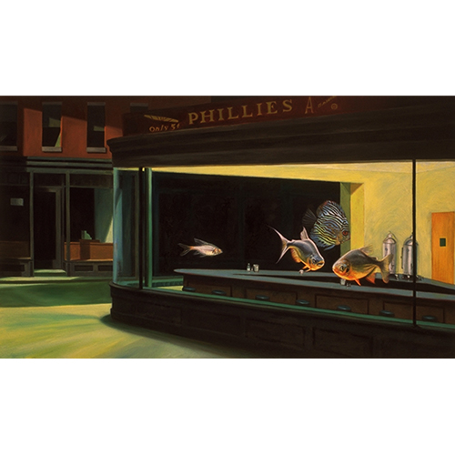

Literature
Ron English, Popaganda: The Art & Subversion of Ron English (San Francisco: Last Gasp, 2001), p. 90. ISBN 1-887128-60-3.
Notes
This work references Edward Hopper's Night Hawks. A representative image is available here .

Ron English, Popaganda: The Art & Subversion of Ron English (San Francisco: Last Gasp, 2001), p. 90. ISBN 1-887128-60-3.
This work references Edward Hopper's Night Hawks. A representative image is available here .